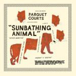
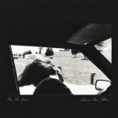

Top Albums of 2014: Part Two
So here is the second half of our Top Fifty Albums of 2014 feature; the first half can be viewed here. As ever, it’s been quite an undertaking rounding up the votes and calculating the staff consensus; if I didn’t have a peculiar passion for spreadsheets I would never have made it this far. The process has been made slightly more intriguing this year by the number of surprises at the upper end of the chart. Usually I can predict the top ten; this year some entries and omissions actually shocked me. Whether the list shocks you, surprises you, or completely meets your expectations, I hope you can discover or decide to revisit at least one record off the back of reading it. (David Coleman, Editor-in-Chief)
. . .
 25. Alvvays
25. Alvvays
Alvvays
(Polyvinyl)
“Too late to stay out, too young to stay in” sings Molly Rankin on Alvvays’ signature track Archie, Marry Me, and a similar tension runs throughout the entirety of the band’s eponymous debut. While there is youth and vigour to the band’s bristly guitar pop – that same track’s distorted squalls being a bit like Sonic Youth, if they actually were youths – there’s also a nagging sense of obligation and expectation, and contemplating if meaningless flings really should be going somewhere. It’s the sound of growing older, but not feeling any wiser, and the strange mix of freedom, exhilaration and guilt that accompanies such confliction; all boiled down into incredibly addictive three and four minute pop songs. (Mark Davison)
 24. Perfume Genius
24. Perfume Genius
Too Bright
(Matador)
After two albums featuring minimal piano arrangements and fierce introspection, Mike Hadreas transforms from caterpillar to butterfly on Too Bright. “No family is safe when I sashay,” he defiantly declares on standout Queen, with primal screams and grunts reflecting a newfound assertiveness manifesting itself not only lyrically, but stylistically and creatively as well. Grid plays like a breathless run through a haunted insane asylum, Fool tinkers with sassy doo wop finger snaps and a rhythmic horn section, and Don’t Let Them In warps into a highbrow piano waltz for the song’s unwelcome party guests. Behind the Perfume Genius facade, Hadreas has emerged as a complex and unique entity demanding both attention and respect. (Ben Jones)
 23. Jenny Lewis
23. Jenny Lewis
The Voyager
(Warner Bros.)
With her first release in six year, the return of Jenny Lewis is like running into an old friend you haven't seen in years. From the first watery piano chord of Head Underwater to the climactic peak of the title track, The Voyager catches us up on her life and all the ups and downs she has gone through. But even in the darker moments, she sings with a wink, a light touch that suggests that everything will be alright in the end. The music is just as warm and inviting, with sun-soaked chords and strings permeating the record. There may be better albums that came out this year, but there are none that feel as comforting as The Voyager. (Joe Marvilli)
22. Parquet Courts
Sunbathing Animal
(What’s Your Rupture/Mom + Pop)
Sunbathing Animal has a late-seventies vibe, when the punk muse worked overtime, and groups like the Ramones and The Clash couldn’t help topping themselves with each release. Yet Parquet Courts’ 21st Century sensibility is closer to the beat poets. It’s less about rebellion, more about social alienation in an age when hope deflates: “Most freedom is deceiving if such a thing exists”. Songs like Bodies and Black And White are fast and loud, but literate lyrics feed the thunderbolt. Among the highlights is the classic blues of Ducking And Dodging, a showcase for Andrew Savage’s poetic imagery. A just-released new album proves that the punk muse is seizing the day . (Angel Aguilar)
 21. Jessie Ware
21. Jessie Ware
Tough Love
(PMR / Island / Interscope)
You can’t really describe someone who makes music so polished as Jessie Ware as “bursting onto the scene” but with her debut, Devotion, she arrived with a sound and aesthetic that already sounded like it had been perfected. Despite that, she upped the ante on her second record, Tough Love, and fully cemented those ideas and themes she’d previously hinted at. Less patchy than its predecessor, Tough Love is an album for grown-ups and dark nights of the soul. It showcases all sides of love, from consuming lust to regret and in Say You Love Me, features a song so haunting and emotional, you can even forgive the fact it was co-written by Ed Sheeran. (Joe Rivers)
 20. Sylvan Esso
20. Sylvan Esso
Sylvan Esso
(Partisan)
An electronica-leaning record produced by a duo from very folky backgrounds (vocalist Amelia Meath also performs in Mountain Man, while producer Nick Sanborn is the bassist from Megafaun) may seem like an odd fit, however, an argument could be made that Sylvan Esso’s self-titled debut album is in itself a folk record, of sorts. Meath’s simple sing-song lyrics and pleasantly unfussy vocals draw their inspiration from children’s songs (H.S.K.T.), skipping -rope rhymes (Could I Be), hymnals (Come Down) and fairy tales (Wolf), while Sanborn’s accompanying brutally squelchy synth backings recalled another formative musical experience for many of the album’s listeners – primitive video game soundtracks. The resulting package was something both innocently winsome, but also capable of genuinely adult sophistication. (Mark Davison)
 19. MØ
19. MØ
No Mythologies to Follow
(Chess Club / RCA Victor)
We've seen a lot of young girls make big names for themselves of late. Shockingly, they're deserving it. This new generation of Britneys and Christinas has translated and updated the pop genre with more electro and less of a pop formula. Taking an obvious influence from her Scandinavian predecessors (Ace of Base, anyone?), Karen Marie Ørsted belts out a slower, stripped down pop record than what we've come to expect from those other girls in the Top 40. Don't Wanna Dance is the clear standout, the rest of the tracks orbiting and enhancing its glow. But the entire album is magnificent adolescent honesty. (Gabbie Nirenburg)
 18. Jack White
18. Jack White
Lazaretto
(Third Man / XL / Columbia)
If the world needed a warning that Jack White was lethal when surrounded by blues riffs and troubled relationships, 2012’s Blunderbuss was that warning. This year’s Lazaretto leaves no doubt that White knows a thing or two about transforming raw emotion into raw music. He makes the guitars wail, wrings out every last drop of angst, pleasure, and confusion from the lyrics, and wields his hysteria like a weapon. White knows exactly how to pace out his music, and he presents Lazaretto as a neatly trimmed collection of wildfire rock that is not only impressive, but fun. By the time we’ve started absorbing White’s madness, we’ve already played Lazaretto ten times over, and it felt new every time. (Luiza Lodder)
17. Run the Jewels
Run the Jewels 2
(Mass Appeal / Sony RED)
In late July, a single called Blockbuster Night Part 1 was released by Run the Jewels, a rap duo comprised of Atlanta MC Killer Mike and Brooklyn producer/rapper El-P. In it Killer Mike states confidently, “Last album voodoo/Proved that we was fuckin’ brutal…” and with that has followed the success of the pair’s new LP, Run the Jewels 2. A sequel to the group’s self-titled debut, RTJ2 did exactly what it was supposed to, building upon the strengths of the former and refining the mix, producing singles as strong as Oh My Darling, Don’t Cry and Close Your Eyes (And Count to Fuck) while addressing situational heartache through the narrative Crown. RTJ has been a fruitful venture to say the least. (Sean Caldwell)
16. Taylor Swift
1989
(Big Machine)
It would be a shame if when trying to account for the phenomenal success of 1989, pop culture historians pointed to Swift’s already devoted fanbase, or the aggressive anti-streaming attitude of her label. For sure these factors contributed to the album’s astronomical sales figures, but more important was the fact that its contents were just the very best sort of out-and-out pop music; looking both backwards (as the title would suggest) and to current trends, and distilling these influences into something that was immediately effective (every track really did sound like a potential hit single) and created with not just care, but a healthy dose of honesty and self-deprecating humour, which added up to a very hard to resist combination. (Mark Davison)
15. Grouper
Ruins
(Kranky)
Few albums can be said to be defined by the sound of a broken microwave beep, but that stark jolt of reality, which pierces the lovely, wandering instrumental Labyrinths and stops it dead in its tracks, perfectly highlights the immersive dream world Liz Harris crafts on Ruins with nothing but a piano, her voice, and a 4-track. This might not sound like new territory for someone who’s been constructing dense soundscapes for years, but Ruins becomes all the more intimate and welcoming thanks to its secret weapon: Songs. Ok, so only four out of eight tracks can honestly be called songs, but those four, built from gorgeous, impressionistic piano melodies and Harris’ heartfelt lyrics, are the most powerful and disarming pieces of music Harris has ever released. The fact that it took her three years to release them makes them all the more special, as if Harris is letting us into a secret world that, until now, has belonged exclusively to her. (Peter Quinton)
14. Sharon van Etten
Are We There
(Jagjaguwar)
Whilst Are We There documents the end of a long-term relationship, to call it a break-up album would be doing it a huge disservice. Van Etten pores over the peaks and troughs of her ending relationship, scrutinising the more enjoyable times as well as the unbearable hurt, but delivered in retrospect the effect is that of aching anguish. Her voice quivers with emotion as she dissects chapter after chapter, with the album’s exquisite production allowing for her heartache to be felt as if it was your own. This is a record that is heartbreakingly alluring, and do press play with caution - Are We There is a beautiful but intense listen. (Carl Purvis)
 13. New Pornographers
13. New Pornographers
Brill Bruisers
(Matador)
Brill Bruisers may be a nod to classic songwriters, but A.C. Newman is poised to join that elite group, with an impressive catalogue that spans six albums. This is New Pornographer’s most satisfying effort since Twin Cinema. That old kinetic energy is regained, let loose from the get-go on the title song, and carried throughout as if chasing the blues away. This power-pop hootenanny keeps spirits up with Spector drums, New Wave keyboards, and sparkling vocals, sometimes referencing ELO (Backstairs) and The Cars (Another Drug Deal Of The Heart). These explosions of joy are tempered by melancholia (Champions Of Red Wine), yet you won’t find a more infectious, rousing album in this dour year. (Angel Aguilar)
 12. Röyksopp and Robyn
12. Röyksopp and Robyn
Do It Again
(Dog Triumph)
Do It Again is a mini-album collaboration by Scandinavian power-pairing Röyksopp and Robyn. From the dancefloor exuberance of the title track to the sprawling ambient epic Inside The Idle Hour, the level of invention within these five tracks puts most full-length albums to shame. Every Little Thing has a Scandi-pop melody paired with wintery electronics, while the sleek techno of Say It is the natural successor to The Girl And The Robot. It's a testament to their combined talents that Robyn and Röyksopp have crafted a mechanical-yet-soulful record that harks back to nothing but the future. (Gary McGinley)
 11. Tune-Yards
11. Tune-Yards
Nikki Nack
(4AD)
Merrill Garbus' clanging, clapping playground sounds make up her third studio album, a powerful (and powerfully ironic) hodge-podge of a white girl's view of the world set to an afro-beat. Her voice is soulful, her lyrics punch, and the music itself is layers upon layers of simplicity creating something truly unique and unusual. Tapping, plucking, banging, strumming, clicking, a spoken-word staccato… all of these things sweep us away into a strange universe of Garbus' design. The whole thing reminds me of Solex circa 2001 (nothing more recent is remotely comparable) and just about nothing else. (Gabbie Nirenburg)
 10. TV On The Radio
10. TV On The Radio
Seeds
(Harvest)
Emerging after the tragedy of losing band member Gerard Smith to cancer was always going to be an immense challenge for the New Yorkers. With such a sorrowful mood hanging over the camp, it would be prudent to expect the first album following his passing to be a sombre affair but Seeds proved to be anything but that. From the infectious catchiness of lead single Happy Idiot, to the dynamic, supercharged racing beat of Lazerray, to the thrilling, heavenly melodic synths of the foot-tappingly outstanding Ride, the album is peppered with joyful moments. And with Tunde Adebimpe’s distinct vocals shining brightly against the synth-drenched canvas, the band have never been so easily accessible; compellingly brilliant. (Graeme Marsh)
9. Caribou
Our Love
(City Slang)
Our Love is one of those rare electronic records that is at once accessible, experimental and emotional. It's also one of those rare electronic records that dares to explore human themes; themes of love, of family, of death. This wide range of themes results in starkly contrasting tracks, such as the sustained, gentle warmth of opener Can't Do Without You, which is notably opposed to the bare, exposed melody of Mars. Regardless of the mood, Snaith has the confidence to build a degree of uneasiness into his sound. And it's this uneasiness, coupled with the incredible and consistent attention to detail in all of his tracks, that makes Our Love such a compelling repeat listen. (Craig Stephens)
 8. Beck
8. Beck
Morning Phase
(Columbia)
What do you do when your musical career is listing toward the doldrums after 20 years, 11 albums, and a lot of success along the way? If you’re Beck, you revisit older work made during an emotionally raw time, distill its aesthetic, and spin it into something that reflects your current state of mind. You keep it mostly acoustic, enlist your father to compose string arrangements, and imbue the whole thing with a shimmering yet melancholic hue that’s perfect for lazy Sunday mornings. Then you don a hat that dwarfs your body, tour relentlessly, and receive a grammy nomination for Album of the Year. (Ben Jones)
7. Swans
To Be Kind
(Young God)
To Be Kind is the kind of album that seems to hail from a different universe. Barren but not lifeless, unrestrained yet graceful, fluid and gritty, Swans have crafted a musical monster. This time, Michael Gira’s ambition is sweepingly accomplished, and the result is a two-hour masterpiece that thrills us every step of the way. From the relentless pulse of the riff in Screen Shot which expands and intimidates like an approaching army to the atavistic yelps on the 34 minute opus Bring the Sun/Toussaint L’Ouverture, To Be Kind is made of the same spirited fury propelling The Doors’ The End or Pink Floyd’s Shine On You Crazy Diamond. We can be sure it will attain equal prestige and longevity. (Luiza Lodder)
 6. Aphex Twin
6. Aphex Twin
Syro
(Warp)
I’ve tried hard to sum up my feelings about Syro, perhaps because I’m unsure what feelings, as a whole, it evokes. Every two bars – which, throughout the record, are seldom identical – Richard James develops what he’s built up, delicately teasing his melodies out of shape, gently twisting levels as new parts are mixed in. Even James’ twiddliest compositions have never been as intricate as Syro, bedecked as this record is with more analogue equipment than you can shake ten sticks at. It’s hard to write about because there are no bits to point to like “Here, listen to this mindblowing moment” – there’s nothing even approaching a drop here, every section is as engaging as the next; it’s about shifting moods rather than cheap build-up and release. And it’s absolutely seamless. (Stephen Wragg)
 5. The War on Drugs
5. The War on Drugs
Lost in the Dream
(Secretly Canadian)
In countless interviews, War on Drugs songwriter Adam Granduciel makes the observation that his songs aren’t necessarily personal. He did, however, suffer from anxiety and isolation during the making of his latest Lost In The Dream, two very complex emotions that are evidently perceived with an almost surreptitious tenderness. Granduciel simply doesn’t want to put himself in the position of explaining himself, which makes his inward-looking songs left open to guesswork and conjecture. But the well-built compositions in Dream are readily exposed, sculpted with tight-locked precision; as a unit, they once again rework that eighties “corporate rock” sound and give it a distinctive flair with its dreamy, multi-layered transcendence. A surefire sign he’s pleasurably constrained to those sonic enclosures, forever a prisoner to the slave ambient, Dream is more so a revealing work on facing-up to the challenges of self-creation. His emotional exorcism is kept at a distance, thereby reaching his intended objective: letting us instinctively take ownership and making them our own. (Juan Rodriguez)
 4. FKA Twigs
4. FKA Twigs
LP1
(Young Turks)
Behind the austere, functional title of LP1 lies a very busy, dysfunctional record. LP1 is the sound of obsession, with Tahliah Barnett’s stop-start, over-layered, and repetitive vocals playing like the sounds of insomniac panic. Panic specifically about sex as the lust-filled panting and hyperventilating of the likes of Pendulum marking the album out as being a true heir to Madonna’s early career persona. However, it’s also a lot more than just the work of a rather filthy one-track mind, with forward-thinking production by Barnett and the likes of Arca and Dev Hynes, creating a work that’s jagged and unsettling, occasionally sweet, and always fascinating. (Mark Davison)
 3. Protomartyr
3. Protomartyr
Under Color of Official Right
(Hardly Art)
Hailing from Detroit, Protomartyr’s Under Color of Official Right pulses with a minimalist and melancholic grit, a post-punk iteration dressed in the tradition of the Motor City’s signature sound. Evoking groups like Wire and The Fall, (as a vocalist, Joe Casey is more of an enunciator like Mark E. Smith than a singer), Protomartyr’s sophomore release blends the outright blast of garage punk (Pagans, Son of Dis) with rhythmic art rock excursions (Bad Advice, Scum, Rise!, Come & See), crafting a fortified rock album that satisfies the boosh-wah pursuit of sophisticated songwriting and the instinctual need to be loud and obnoxious. While Under Color of Official Right may not signify a new chapter for Detroit’s ongoing rock n’ roll timeline, it could. (Sean Caldwell)
 2. Sun Kil Moon
2. Sun Kil Moon
Benji
(Caldo Verde)
In a year in which I’ve watched more boxing than I have listened to new music, it seems strangely fitting that my favourite album came from a project named after a legendary pugilist. Benji is a complex, multi-layered creation. Mark Kozelek’s engaging songwriting slowly pulls you into the singer’s melancholy world, where nostalgia rubs shoulders with grief, tragedy and heartbreak. Increased familiarity sees thin strands of dark humour and optimism begin to emerge, lightening the tone somewhat. In addition to some beautiful eulogies, Benji also features three wonderful tributes to the living in I Can’t Live Without My Mother’s Love, I Love My Dad and Ben’s My Friend. Kozelek has served up a poetic, thought-provoking record that is both astonishingly personal and yet remarkably easy for anyone with a sense of their own mortality to relate to. Benji is an absolute triumph and a true career landmark. (David Coleman)
 1. St. Vincent
1. St. Vincent
St. Vincent
(Loma Vista / Republic)
Of course Annie Clark had previously released a series of fantastic albums under the St. Vincent sobriquet, but there was something about this release that raised that bar even higher. Maybe it’s the consistent themes – familial relationships, our society’s over-reliance on technology – that run through it, giving it a strong sense of structure? Maybe it’s the intensity of the music – urgent brass blasts and spasmodic, jerky ersatz funk? Maybe it’s because Clark released the album the world needed at exactly the right time? Whatever the reasons, St. Vincent is a career highlight in an already stellar career and has deservedly been winning plaudits from anyone with at least one functioning ear. (Joe Rivers)
. . .
So that, in a nutshell, was 2014. We hope you enjoyed the list and our coverage of the year; all the best for the holidays and see you again in 2015.
24 December, 2014 - 07:57 — No Ripcord Staff